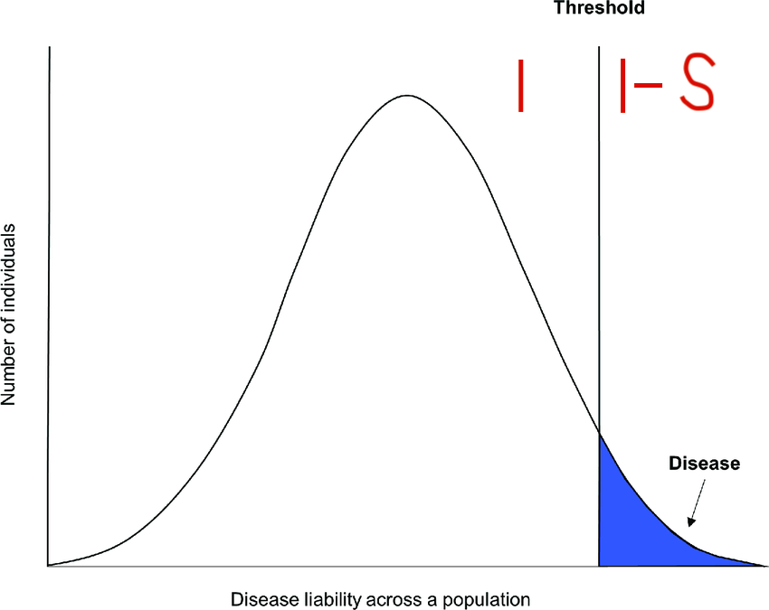
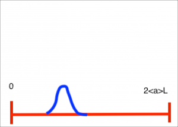
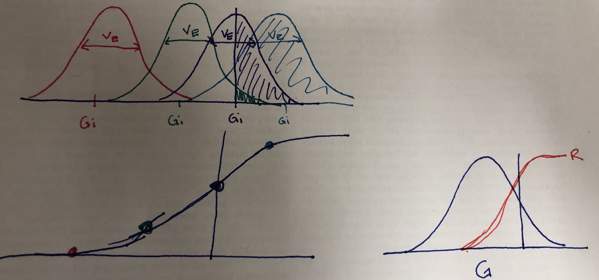

Last updated: 2020-01-14
Checks: 7 0
Knit directory: infer_mutational_bias/analysis/
This reproducible R Markdown analysis was created with workflowr (version 1.4.0). The Checks tab describes the reproducibility checks that were applied when the results were created. The Past versions tab lists the development history.
Great! Since the R Markdown file has been committed to the Git repository, you know the exact version of the code that produced these results.
Great job! The global environment was empty. Objects defined in the global environment can affect the analysis in your R Markdown file in unknown ways. For reproduciblity it’s best to always run the code in an empty environment.
The command set.seed(20191108) was run prior to running the code in the R Markdown file. Setting a seed ensures that any results that rely on randomness, e.g. subsampling or permutations, are reproducible.
Great job! Recording the operating system, R version, and package versions is critical for reproducibility.
Nice! There were no cached chunks for this analysis, so you can be confident that you successfully produced the results during this run.
Great job! Using relative paths to the files within your workflowr project makes it easier to run your code on other machines.
Great! You are using Git for version control. Tracking code development and connecting the code version to the results is critical for reproducibility. The version displayed above was the version of the Git repository at the time these results were generated.
Note that you need to be careful to ensure that all relevant files for the analysis have been committed to Git prior to generating the results (you can use wflow_publish or wflow_git_commit). workflowr only checks the R Markdown file, but you know if there are other scripts or data files that it depends on. Below is the status of the Git repository when the results were generated:
Ignored files:
Ignored: .DS_Store
Ignored: .Rhistory
Ignored: .Rproj.user/
Ignored: .snakemake/conda-archive/
Ignored: .snakemake/conda/
Ignored: .snakemake/locks/
Ignored: .snakemake/scripts/
Ignored: .snakemake/shadow/
Ignored: .snakemake/singularity/
Ignored: analysis/.DS_Store
Ignored: data/47UKBB/
Ignored: docs/.DS_Store
Ignored: output/.DS_Store
Ignored: output/47UKBB/
Untracked files:
Untracked: docs/assets/
Untracked: docs/figure/simple_inference_PRF.Rmd/
Unstaged changes:
Deleted: analysis/figure_out_cs.Rmd
Deleted: analysis/model_overvieew.Rmd
Note that any generated files, e.g. HTML, png, CSS, etc., are not included in this status report because it is ok for generated content to have uncommitted changes.
These are the previous versions of the R Markdown and HTML files. If you’ve configured a remote Git repository (see ?wflow_git_remote), click on the hyperlinks in the table below to view them.
| File | Version | Author | Date | Message |
|---|---|---|---|---|
| Rmd | 7bfd199 | jgblanc | 2020-01-14 | Worked on inference problem |
In this document I am going to outline the whole polygenic mutation selection balance model. These notes are based on the explanation Jeremy gave on 11/27. First, I will outline the general set-up and then I will go through how to solve different parts of the model.
This model is based on the liability threshold model where every individual has a liability for the disease, \(Z_i\), that is the sum of their genetic libability, \(G_i\) and their libability due to the environment, \(E_i\).
\[Z_i = G_i + E_i \;\;\;\;\; E_i\sim N(0, V_e)\]
The genetic component of liability can be further decomposed into the sum of an the number of liability increasing alleles at a site multiplied by the effect size of the liability increasing allele. For now we assume there is some distribution from which effect sizes are drawn, \(p(\alpha)\).
\[G_i = \sum_{l=1}^{L} \alpha_l *g_{i,l} \;\;\;\;\;\;\;\; g_{i,l} \subset \{0,1,2\}\]
Both genetic and environmental liability are normally distributed, meaning that the overall liability is also normally distributed. In the threshold model, there is a threshold beyond which individuals have the disease and have reduced fitness as a consequence. Specifically individuals who are beyond the threshold have fitness \(1-S\). Check: is S the reduction in relative fitness for everyone who is across the threshold? Mean reduction in offspring?

If a population is in long-term mutation selection balance, the change in the average genetic liability per generation due to mutations must be equal and opposite the change in the average genetic liability per generation due to selection. Here we are assuming that the \(V_e\) is constant each generation (check). I need to ask about why we only care about the mean genetic libability? We are assuming the shape of the distribution stays the same and we can capture all dynamics by the mean Below is the detailed mutation selection balance equation where \(<G> = \frac{1}{N}\sum\limits_i^NG_i\) is used to denote the mean genetic liability of the popultion.
\[\Delta\mu^{(\langle G \rangle)} = \Delta s^{(\langle G \rangle)}\]
Here the superscript \((<G>)\) is used to make it clear that these are the per generation changes in mean genetic liability due to mutation and selection. Now we will derive expressions for both sides of this equation that will allow us to solve for quantities of interest in the population.
We will start with the per generation change in the mean genetic liability due to mutation. Our mutation model is state dependent which means that the probability of mutating to a specific “type” depends on the current state of the site. In practical terms, this means that at each of our bi-allelic sites, the only possible mutations are from the risk increasing allele to the risk decreasing allele and visa versa. Therefore we can breakdown the change due to mutation into the mean change in genetic liability due to risk increasing mutations minus the change due to risk decreasing mutations.
\[\Delta\mu^{(\langle G \rangle)} = \Delta\mu_+^{(<G>)} - \Delta\mu_-^{(<G>)}\]
First we will focus on \(\Delta\mu_+^{(\langle G \rangle)}\), the change in the mean genotype due to liability increaing mutations. This amounts to multiplying the per base mutation rate by the total number of sites that currently have a liability decreasing allele, \(\sum\limits_l^L\alpha_l(2 - g_{i,l})\), averaged over the total number of individuals:
\[\Delta\mu_+^{(\langle G \rangle)} = \mu \frac{1}{N}\sum\limits_i^N \sum\limits_l^L \alpha_l(2 - g_{i,l})\]
Now we will go through a few steps of algebra to get the above equation into a form that is easier to work with. First we will just mutiply through by \(\alpha_l\) and separate the inside sum.
\[\Delta\mu_+^{(\langle G \rangle)} = \mu \frac{1}{N}\sum\limits_i^N \big(\sum\limits_l^L 2 \alpha_l- \sum\limits_l^L\alpha_l g_{i,l}\big)\]
Now we recognize that the sum of \(\alpha_l\) over L is equivalent to the average \(\alpha\) multiplied by L and that by definition \(G_i = \sum_l \alpha_l g_{i,l}\)
\[\Delta\mu_+^{(\langle G \rangle)} = \mu \frac{1}{N}\sum\limits_i^N (2\langle\alpha\rangle L - G_i) \]
Finally, we average over individuals, recognizing that \(2\langle\alpha\rangle L\) does not depend on i.
\[\Delta\mu_+^{(\langle G \rangle)} = \mu (2 \langle\alpha\rangle L-\langle G \rangle)\]
We have solved for the increase in mean liability in one generation due to mutation. We can use a similar process (below) to solve for the decrease in mean liability due to mutation. In this case the number of possible alleles than can be mutated from liability increasing to decreasing is \(\sum\limits_l^L g_{i,l}\).
\[\Delta\mu_-^{(\langle G \rangle)} = \mu \frac{1}{N} \sum\limits_i^N \sum\limits_l^L \alpha_l g_{i,l} \]
\[\Delta\mu_-^{(\langle G \rangle)} = \mu \frac{1}{N} \sum\limits_i^N G_i\]
\[\Delta\mu_-^{(\langle G \rangle)} = \mu \langle G \rangle\]
Now we can re-write the full expression for change in mean genetic liability due to mutation and do some easy algebra.
\[\Delta\mu^{(\langle G \rangle)} = \Delta\mu_+^{(\langle G \rangle)} - \Delta\mu_-^{(\langle G \rangle)}\]
\[ = \mu (2 \langle\alpha\rangle L-\langle G \rangle) - \mu \langle G \rangle\]
\[ = \mu(2 \langle\alpha\rangle L -2\langle G \rangle) \]
Next, we want to manipulate this equation in a way that allows us to pull out the constants from the (). It is important to remember that \(\langle\alpha\rangle\) is a constant and not a random varaible because the effect size for each locus is a fixed value determined by biology that is not changing over the generations.
\[ = 4\langle\alpha\rangle L \mu \big(\frac{1}{2} - \frac{\langle G \rangle}{2 \langle\alpha\rangle L}\big)\]
We should stop here and try to build some intuition for how this mutational process is working from this equation. We can think about the distribution of genetic liability as existing somewhere between 0 and \(2\langle\alpha\rangle L\) and mutational pressure moving the population along this scale. For example if the average genetic liability, \(\langle G \rangle\) is equal to \(\langle\alpha\rangle L\), then the equation above will equal zero. This corresponds to the population being centered at \(\langle\alpha\rangle L\) and there being the same number of liability increasing and liability decreasing mutations (if the effect sizes are the same). In this case there is no mutational pressure and the population will stay there (again, we are forgetting about selection for now).
On the other hand, the closer to 0 \(\langle G \rangle\) is, the more mutational pressure there will be. When the mean genetic liability is near zero, most sites will be fixed for the liability decreaseing allele and all new mutations will be ability increasing and move the population towards the equilibrium point of \(\langle\alpha\rangle L\).

Next, we are going to manipulat this equation even more. First, we will simply re-write it, adding and subtracting a constant, \(\frac{T}{2\langle\alpha\rangle L}\), where T is the the liability threshold which lies somewhere on the same scale of 0 to \(2 \langle\alpha\rangle L\). Another interpretation is the number of average size liability increasing you can have before you cross the threshold and get the disease.
\[\Delta\mu^{(\langle G \rangle)} = 4\langle\alpha\rangle L \mu \big( \frac{1}{2} - \frac{\langle G\rangle }{2 \langle\alpha\rangle L} + \frac{T}{2 \langle\alpha\rangle L} - \frac{T}{2 \langle\alpha\rangle L}\big)\]
Rearrage:
\[\Delta\mu^{(\langle G \rangle)} = 4\langle\alpha\rangle L \mu \big( \frac{1}{2} + \frac{T - \langle G\rangle }{2 \langle\alpha\rangle L} - \frac{T}{2 \langle\alpha\rangle L}\big)\]
CHECK this part By assuming that the mean genetic liability is close to the threshold, we can say that \(T - \langle G\rangle \approx 0\) and drop that term entirely.
\[\Delta\mu^{(\langle G \rangle)} = 4\langle\alpha\rangle L \mu \big( \frac{1}{2} - \frac{T}{2 \langle\alpha\rangle L}\big)\]
This is the final expression we have for the change in mean genetic liability due to mutation. This means that \(\frac{T}{2 \langle\alpha\rangle L}\) is measure of the mutational bias. If the threshold is close to \(\langle\alpha\rangle L\) then there is no mutational bias and if it is close to zero, there is a high degress of mutational bias and nearly all new mutations are liability increasing.
So far we have derived an expression for the mean change in genetic liability due to mutation in one generation. For long term equilibrium to hold, this change must be equal and opposite to the change due to selection. In this section we will derived an expression for mean change in genetic liability due to selection, because selection always acts against the risk alleles the change in mean genetic liability per generation due to selection will be negative.
To start with, we can write the change as the difference between the average genetic liability of the current popultion (before selection), t, and the mean genetic liability after selection, t’.
\[\Delta_s^{(\langle G \rangle)} = \langle G \rangle_{t'} - \langle G \rangle_t\]
We know the mean of the genetic liability of the current population, \(\langle G \rangle_t\), so we need a way to solve for the mean genetic liability of the next generation, \(t'\). To do this, we need to consider the fitness of each possible genotypee. Genreally we can write \(\langle G \rangle_{t'}\) as a weighted average where the weights are the number of offpring produced by each individuals i \(W_i\).
\[\langle G \rangle_{t'} = \frac{\sum\limits_i G_i\langle W_i|G_i\rangle}{\sum\limits_i \langle W_i|G_i\rangle}\]
In order to calculate the above equation, we need to introduce the concept of the risk. Risk is a function of genotype liability given the threshold and the \(V_E\). We can think about risk of an individual as the probability of drawing the an environmental variable that pushes them across the threshold given their genetic liability. Using this intuition, we can write an individual’s risk as:
\[R_i = 1 - \Phi(T|G_i, V_E)\]

As illustrated in the picture above, an individuals risk is the area under the normal distribution that falls on the right side of the threshold where the normal disibution has a mean of \(G_i\) and variance of \(V_E\). We use this formula across the entire distribution of genetic liabilities to get a smooth risk curve that is a function of genetic liability.
We can use risk
sessionInfo()R version 3.5.1 (2018-07-02)
Platform: x86_64-apple-darwin15.6.0 (64-bit)
Running under: macOS High Sierra 10.13.6
Matrix products: default
BLAS: /Library/Frameworks/R.framework/Versions/3.5/Resources/lib/libRblas.0.dylib
LAPACK: /Library/Frameworks/R.framework/Versions/3.5/Resources/lib/libRlapack.dylib
locale:
[1] en_US.UTF-8/en_US.UTF-8/en_US.UTF-8/C/en_US.UTF-8/en_US.UTF-8
attached base packages:
[1] stats graphics grDevices utils datasets methods base
other attached packages:
[1] knitr_1.23
loaded via a namespace (and not attached):
[1] workflowr_1.4.0 Rcpp_1.0.3 digest_0.6.22 rprojroot_1.3-2
[5] backports_1.1.5 git2r_0.25.2 magrittr_1.5 evaluate_0.14
[9] stringi_1.4.3 fs_1.3.1 whisker_0.3-2 rmarkdown_1.13
[13] tools_3.5.1 stringr_1.4.0 glue_1.3.1 xfun_0.7
[17] yaml_2.2.0 compiler_3.5.1 htmltools_0.3.6